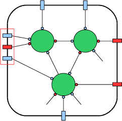
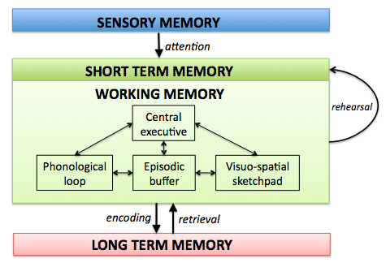
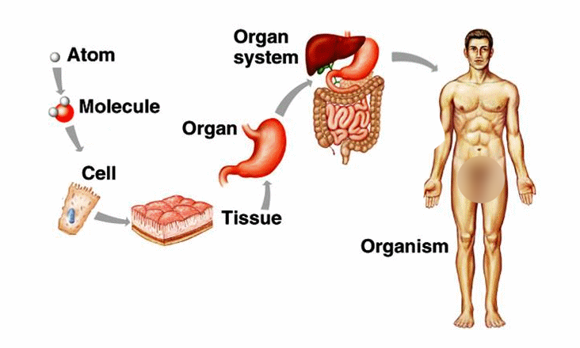
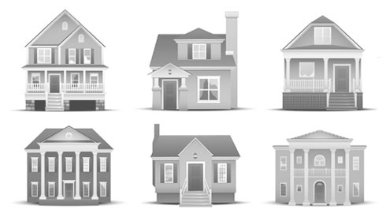
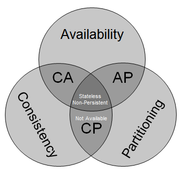
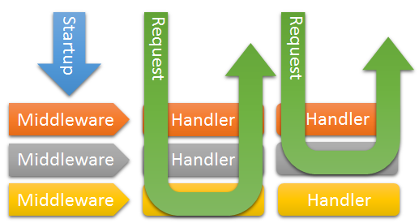
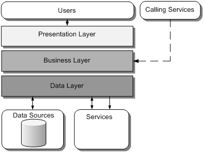

Architecture
in 10 min
by niquola

health samurai
Nikolay Ryzhikov

Saint-Petersburg
What is architecture?
Elements & Constraints
Functional properties &
Quality attributes
Quality attributes
Components, Connectors & Data

Constraints
why architecture?

human limitations 3-4
many architectures
- Layers of abstraction
- Phases
- Evolution
levels
homo- & heterogeneity
architectural styles
Trade-off
Extendability vs Simplicity
zero-architecture
- component: any
- restriction: none
pipeline (sequential)

composable & reusable
- component: uniform
- restriction: out/in
- composable & reusable
layered (hierarchy)

- component: layer
- restriction: down->up
- ?
REST
- component: client/server resource/operation/representation
- restriction: generic, stateless, hypertext-driven